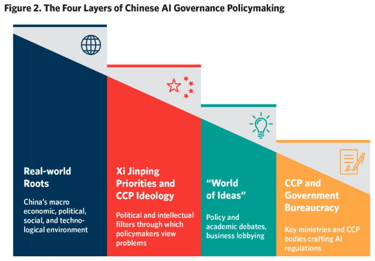
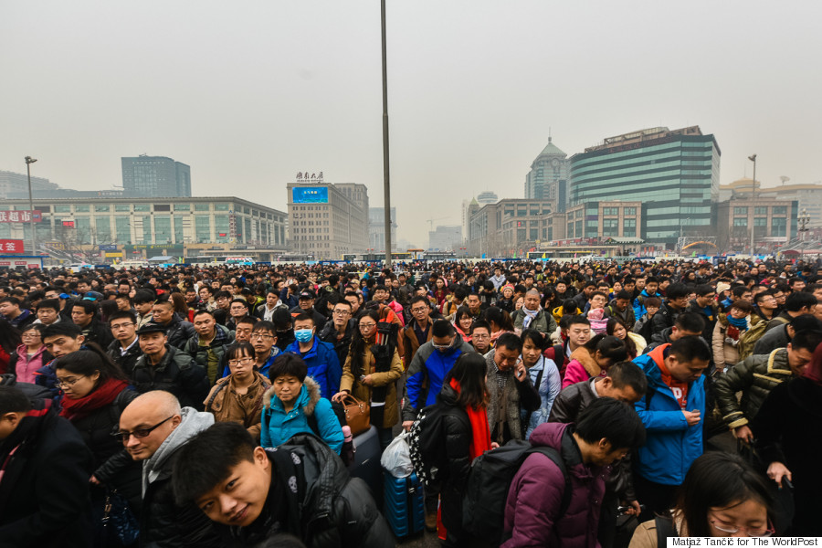
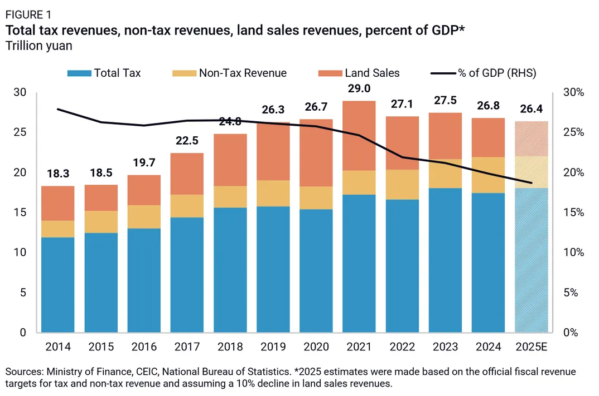
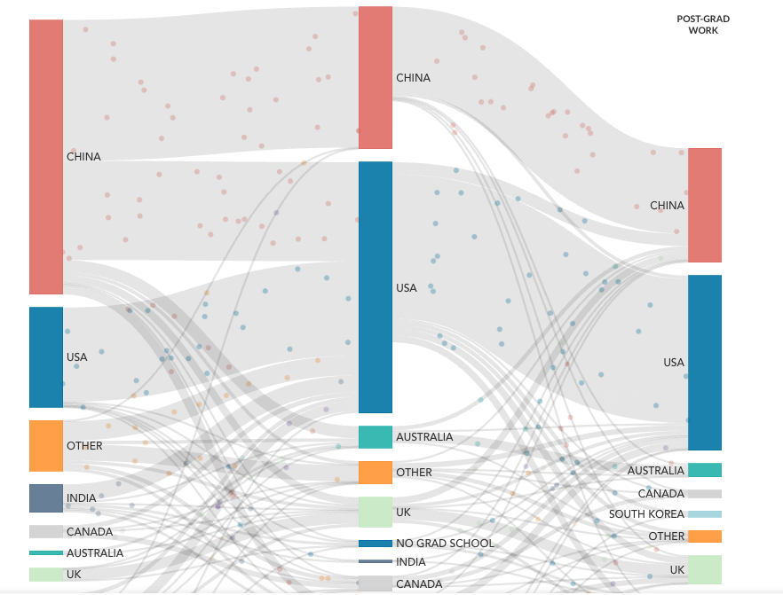
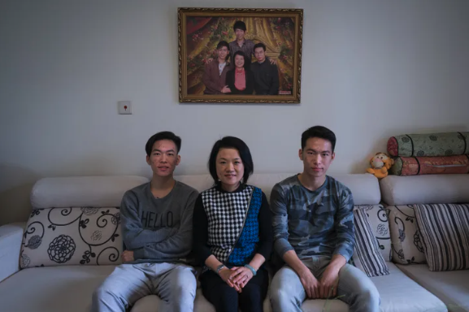
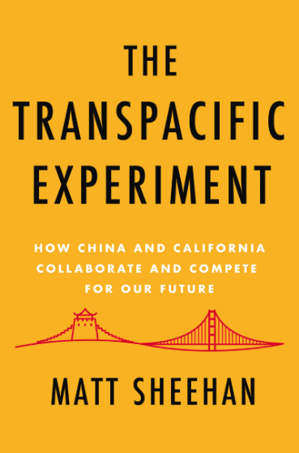

Tracing the Roots of China's AI Regulations
A deep investigation into how China became the first country to implement detailed, binding regulations on AI applications, tracing the policy funnel from face-swap apps through bureaucratic processes.
Matt Sheehan is a senior fellow at the Carnegie Endowment for International Peace, where his research covers artificial intelligence development and policy, with a focus on China. His research projects explore China's AI policy ecosystem, the role of technology in China's political economy, and U.S.-China competition in AI. Matt is the author of The Transpacific Experiment: How China and California Collaborate and Compete for our Future (Counterpoint Press, 2019).
From 2010-2016 Matt lived and worked in China, including as the first China correspondent for the World Post. After returning from China, Matt worked as a fellow at the Paulson Institute's think tank, MacroPolo, where he led research on Chinese technology issues.
His writing has been published by the Atlantic, Bloomberg, Vice, and Wired. His research has been cited by numerous government agencies and media outlets, including the National Security Commission on AI, the New York Times, the Wall Street Journal, and the San Francisco Chronicle. Matt reads, writes, and speaks Mandarin Chinese.
I'm Matt Sheehan, a senior fellow at the Carnegie Endowment for International Peace, where my research covers artificial intelligence development and policy, with a focus on China. My research projects explore China's AI policy ecosystem, the role of technology in China's political economy, and U.S.-China competition in AI. I'm the author of The Transpacific Experiment: How China and California Collaborate and Compete for our Future (Counterpoint Press, 2019). I read, write and speak Mandarin Chinese. You can find more of my work at my Substack.

A deep investigation into how China became the first country to implement detailed, binding regulations on AI applications, tracing the policy funnel from face-swap apps through bureaucratic processes.

An immersive narrative account of traveling with millions of Chinese workers during the Lunar New Year migration, the world's largest annual movement of people.
My appearance on the Your Undivided Attention podcast, exploring fundamental questions about how the Chinese government and public approach AI, the most persistent misconceptions in the West, and whether cooperation between rivals is actually possible.
A new draft regulation on "anthropomorphic AI" could impose significant new compliance burdens on the makers of AI companions and chatbots, targeting addiction and psychological harms from emotional interactions with AI.
A narrative account of asking a politically charged question at the Premier's press conference during China's annual Two Sessions meetings, and the wardrobe malfunction that nearly derailed the whole thing.
My visual love letter to the city of Beijing, with scenes of the city that I filmed set to Rhapsody in Blue.
Analyzing China's new AI Safety Governance Framework 2.0, which reveals growing concern over risks from open-source models, labor market impacts, and potential loss of control over advanced AI systems.

Analyzing China's AI+ initiative, which aims to accelerate development and deployment of AI across the economy, following in the tradition of tech stimulus policies like the 2015 Internet+ campaign.

An interactive data project mapping the global flow of top AI researchers, revealing patterns in where talent is trained and where it ends up working.
The story of Liu Renwang, who was tortured into confessing to murder and spent five years in prison before his conviction was overturned, examining China's criminal justice reforms under Xi Jinping.

Following two brothers from rural China as they pursue dramatically different educational paths, revealing the choices and trade-offs facing Chinese students today.
Exploring how China became an issue in Iowa's presidential caucuses, connecting the dots between trade wars, rural America, and U.S.-China relations.
The first episode introducing the Heartland Mainland podcast series, examining the connections between America's heartland and China.
A deep investigation into how China became the first country to implement detailed, binding regulations on AI applications, tracing the policy funnel from face-swap apps through bureaucratic processes.
An interactive data project mapping the global flow of top AI researchers, revealing patterns in where talent is trained and where it ends up working.
Analyzing China's new AI Safety Governance Framework 2.0, which reveals growing concern over risks from open-source models, labor market impacts, and potential loss of control over advanced AI systems.
A new draft regulation on "anthropomorphic AI" could impose significant new compliance burdens on the makers of AI companions and chatbots, targeting addiction and psychological harms from emotional interactions with AI.
Analyzing China's AI+ initiative, which aims to accelerate development and deployment of AI across the economy, following in the tradition of tech stimulus policies like the 2015 Internet+ campaign.
The story of Liu Renwang, who was tortured into confessing to murder and spent five years in prison before his conviction was overturned, examining China's criminal justice reforms under Xi Jinping.
An immersive narrative account of traveling with millions of Chinese workers during the Lunar New Year migration, the world's largest annual movement of people.
Following two brothers from rural China as they pursue dramatically different educational paths, revealing the choices and trade-offs facing Chinese students today.
A narrative account of asking a politically charged question at the Premier's press conference during China's annual Two Sessions meetings, and the wardrobe malfunction that nearly derailed the whole thing.
My appearance on the Your Undivided Attention podcast, exploring fundamental questions about how the Chinese government and public approach AI, the most persistent misconceptions in the West, and whether cooperation between rivals is actually possible.
Exploring how China became an issue in Iowa's presidential caucuses, connecting the dots between trade wars, rural America, and U.S.-China relations.
The first episode introducing the Heartland Mainland podcast series, examining the connections between America's heartland and China.
My visual love letter to the city of the city of Beijing, with scenes of the city that I filmed set to Rhapsody in Blue.

Counterpoint Press, 2019
The Transpacific Experiment explores the surprising connections between China and California, two of the world's most innovative regions. Drawing on years of reporting and research, the book examines how entrepreneurs, students, and ideas flow between these two places, creating a complex web of collaboration and competition that shapes our technological future.